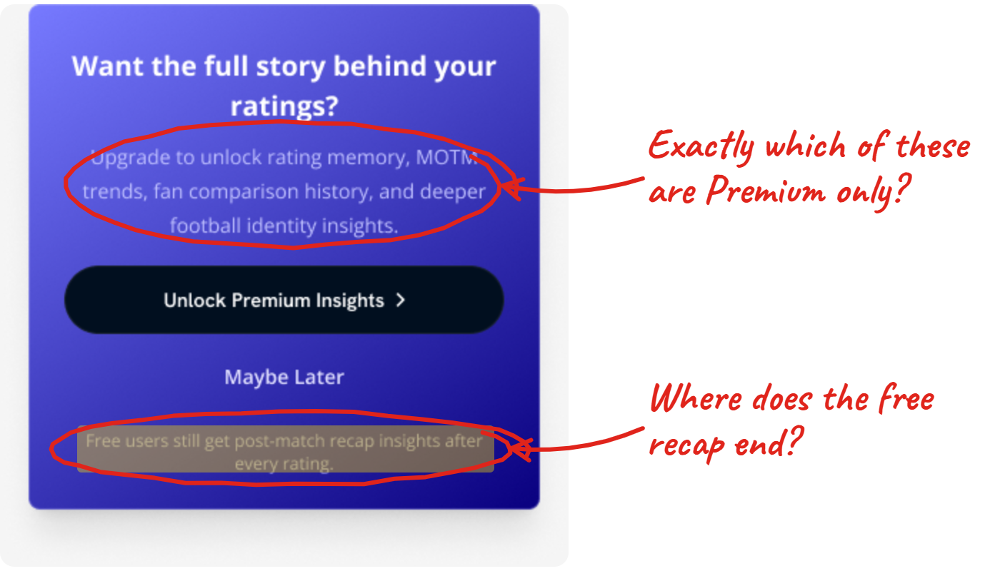
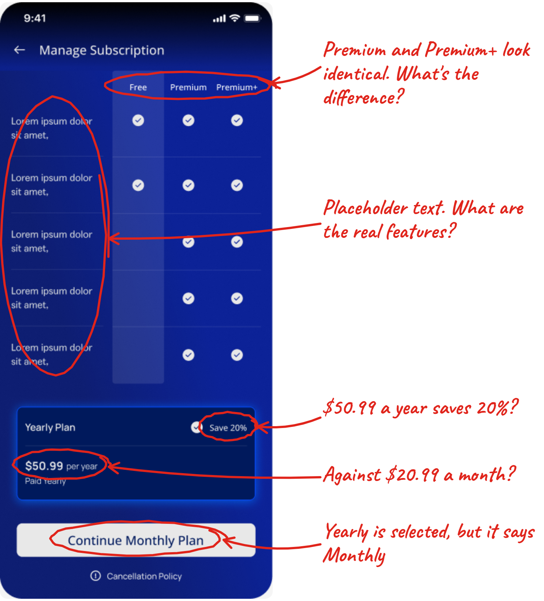
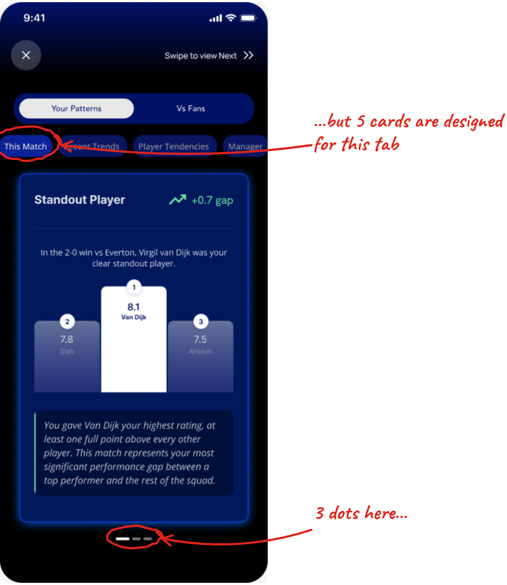
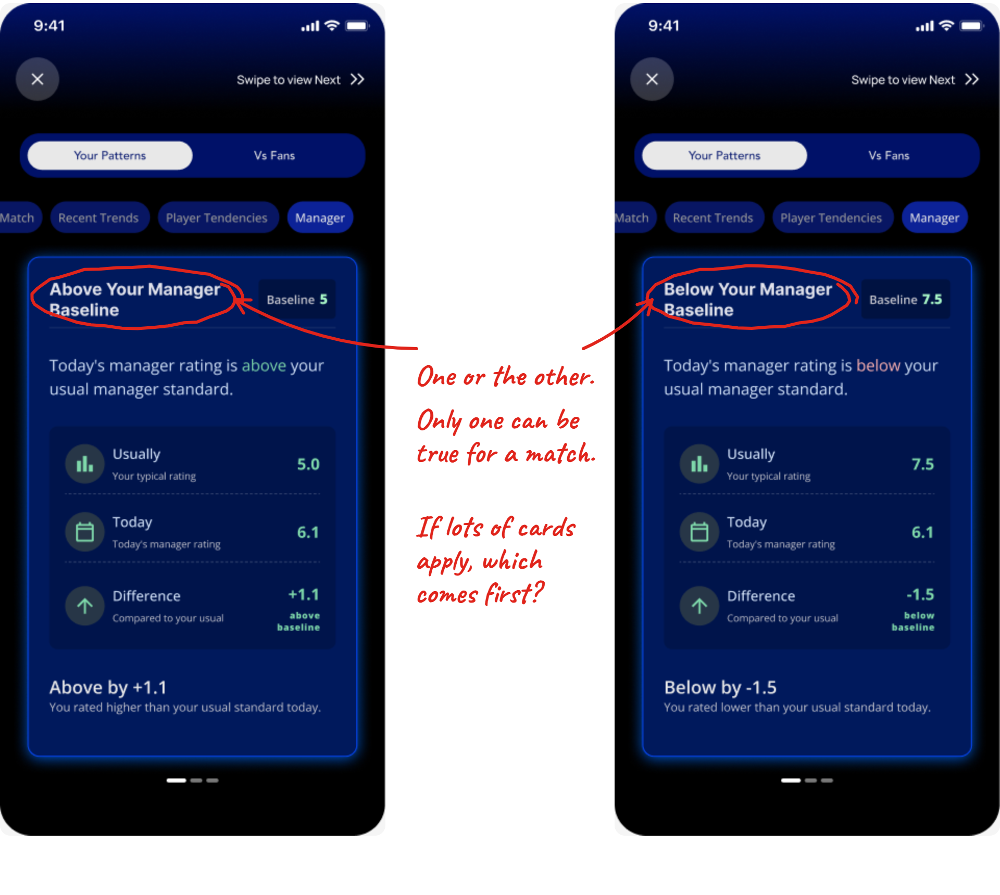
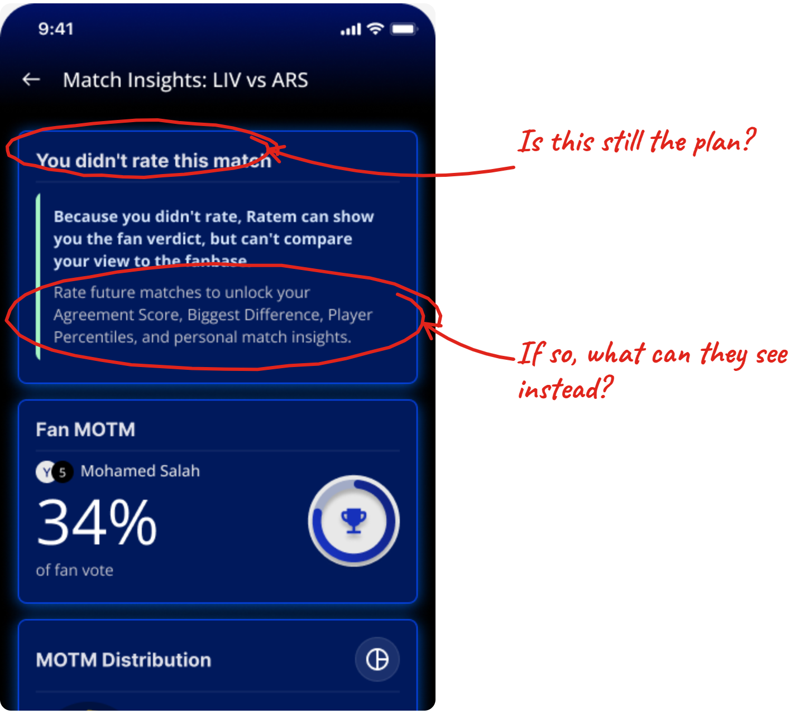
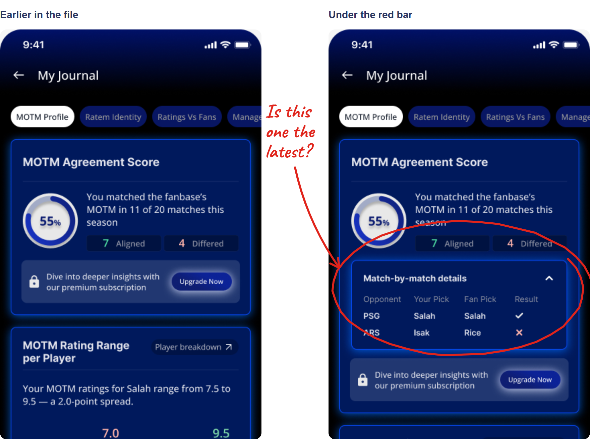
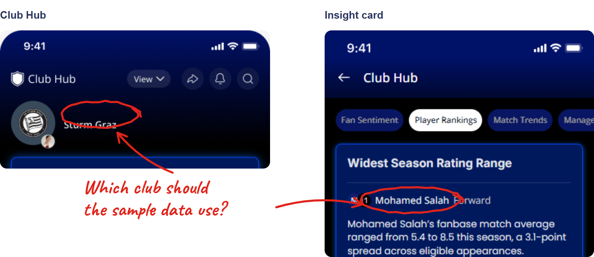
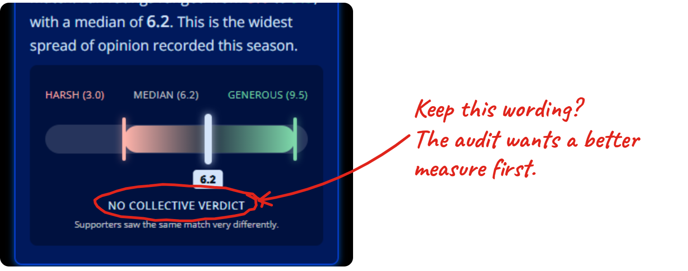
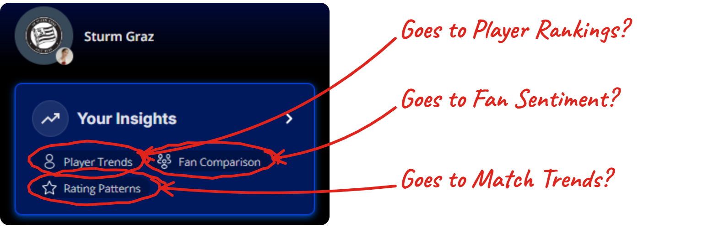
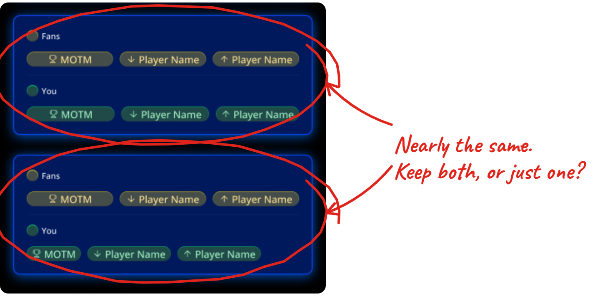

<title>RATEM Design Questions</title>
<meta name="claude:viewport-fit-sides" content="cover">
<link rel="stylesheet" href="https://fonts.googleapis.com/css2?family=Open+Sans:wght@400;600&family=Poppins:wght@500;600&display=swap">
<style>
  /* Layout: a single reading column, like an annotated letter, with each screenshot directly under its question. */
  :root {
    --paper: #f3f5fb;
    --sheet: #ffffff;
    --ink: #16204a;
    --soft: #4d5779;
    --navy: #0e1e72;
    --line: #d9def0;
    --marker: #c81e16;
    --head: "Poppins", "Segoe UI", Arial, sans-serif;
    --body: "Open Sans", "Segoe UI", Arial, sans-serif;
    color-scheme: light;
  }
  body {
    background: var(--paper);
    color: var(--ink);
    font: 400 16px/1.6 var(--body);
    padding-left: max(16px, env(safe-area-inset-left, 0px));
    padding-right: max(16px, env(safe-area-inset-right, 0px));
    padding-block: 32px 56px;
  }
  main { max-width: 760px; margin: 0 auto; display: grid; gap: 48px; }
  header { display: grid; gap: 12px; }
  .brand { font: 600 13px/1 var(--head); letter-spacing: .14em; color: var(--navy); }
  h1 { margin: 0; font: 600 32px/1.2 var(--head); text-wrap: balance; }
  h2 { margin: 0; padding-bottom: 8px; border-bottom: 2px solid var(--navy); font: 600 20px/1.3 var(--head); color: var(--navy); }
  p { margin: 0; max-width: 65ch; }
  section { display: grid; gap: 32px; }
  article { display: grid; gap: 12px; min-width: 0; }
  .ask { display: flex; gap: 12px; }
  .num { flex: none; font: 600 16px/1.6 var(--head); color: var(--marker); min-width: 1.6em; }
  .ask p { min-width: 0; }
  .ask strong { font-weight: 600; }
  figure { margin: 0; padding: 12px; background: var(--sheet); border: 1px solid var(--line); border-radius: 6px; }
  figure img { display: block; width: 100%; height: auto; max-width: 100%; }
  figure.tall img { max-width: 520px; margin: 0 auto; }
  footer { display: grid; gap: 8px; padding-top: 24px; border-top: 1px solid var(--line); color: var(--soft); }
  @media (max-width: 480px) { h1 { font-size: 26px; } figure { padding: 6px; } }
</style>

<main>
  <header>
    <div class="brand">RATEM</div>
    <h1>A few questions before we build further</h1>
    <p>Hi there,</p>
    <p>The Club Hub prototype is done, and I've mapped out how the whole app fits together. Before we move on to Match Insights and My Journal, I have a few questions. I've marked up the screens so you can see exactly what I mean. Short answers are totally fine.</p>
    <p><strong>Questions 1 and 2 matter most</strong>, because they decide what we build next.</p>
  </header>

  <section>
    <h2>Free vs Premium</h2>
    <article>
      <div class="ask"><span class="num">1</span><p>Which insights do free users get, and which are Premium only? I know free users get a recap after every match they rate, but I'm not sure where that stops.</p></div>
      <figure></figure>
    </article>
    <article>
      <div class="ask"><span class="num">2</span><p>Is this subscription screen still the plan? It has Free, Premium and Premium+, but the feature names are placeholders and both paid plans have the same ticks. What does each plan include? I also want to check the prices: the screen says $50.99 a year saves 20%. I found $20.99 in the file too, and I'm guessing that's monthly. If it is, the yearly plan saves about 80%. The button also says "Continue Monthly Plan" while Yearly is selected.</p></div>
      <figure class="tall"></figure>
    </article>
  </section>

  <section>
    <h2>Match Insights</h2>
    <article>
      <div class="ask"><span class="num">3</span><p>How many cards should someone see after a match? The This Match tab has five cards designed but only three dots showing. Should we show everything that applies, or pick the top few?</p></div>
      <figure class="tall"></figure>
    </article>
    <article>
      <div class="ask"><span class="num">4</span><p>If several cards apply, how should we choose which ones appear first? For example, should the most surprising insight lead, or should it always follow a set order?</p></div>
      <figure></figure>
    </article>
    <article>
      <div class="ask"><span class="num">5</span><p>What should happen when someone didn't rate a match? There's a "You didn't rate this match" screen, but it's in a greyed-out section of the file, so I'm not sure if it's still the plan.</p></div>
      <figure></figure>
    </article>
  </section>

  <section>
    <h2>My Journal</h2>
    <article>
      <div class="ask"><span class="num">6</span><p>Are the designs under the red bar on the far right the latest versions? The bar has no label, so I've assumed yes. The main difference I can see is the added match-by-match table.</p></div>
      <figure></figure>
    </article>
  </section>

  <section>
    <h2>Club Hub</h2>
    <article>
      <div class="ask"><span class="num">7</span><p>Which club should we use for the sample data? The main screen shows Sturm Graz, but the insight cards mention Liverpool players like Salah, so it would be good to pick one.</p></div>
      <figure></figure>
    </article>
    <article>
      <div class="ask"><span class="num">8</span><p>On Most Controversial Match, should we keep "No collective verdict"? The audit suggests changing how disagreement is measured first, so I've left it as designed for now.</p></div>
      <figure></figure>
    </article>
    <article>
      <div class="ask"><span class="num">9</span><p>On the Your Insights card, where should each button go? The notes below show how I've linked them for now.</p></div>
      <figure></figure>
    </article>
    <article>
      <div class="ask"><span class="num">10</span><p>There are two nearly identical Fans/You cards on the main Club Hub screen. Are both needed, or just one? I've shown one for now.</p></div>
      <figure></figure>
    </article>
  </section>

  <footer>
    <p>Thanks! You can reply by question number.</p>
  </footer>
</main>
